This is an auto-plotting function that will take in a tidy_
distribution function and a few arguments with regard to the output of the
visualization.
If the number of simulations exceeds 9 then the legend will not print. The plot subtitle is put together by the attributes of the table passed to the function.
tidy_random_walk_autoplot(
.data,
.line_size = 1,
.geom_rug = FALSE,
.geom_smooth = FALSE,
.interactive = FALSE
)Arguments
- .data
The data passed in from a tidy_
distributionfunction liketidy_normal()- .line_size
The size param ggplot
- .geom_rug
A Boolean value of TRUE/FALSE, FALSE is the default. TRUE will return the use of
ggplot2::geom_rug()- .geom_smooth
A Boolean value of TRUE/FALSE, FALSE is the default. TRUE will return the use of
ggplot2::geom_smooth()Theaesparameter of group is set to FALSE. This ensures a single smoothing band returned with SE also set to FALSE. Color is set to 'black' andlinetypeis 'dashed'.- .interactive
A Boolean value of TRUE/FALSE, FALSE is the default. TRUE will return an interactive
plotlyplot.
Value
A ggplot or a plotly plot.
Details
This function will produce a simple random walk plot from a tidy_
distribution function.
See also
Other Autoplot:
tidy_autoplot()
Examples
tidy_normal(.sd = .1, .num_sims = 5) %>%
tidy_random_walk(.value_type = "cum_sum") %>%
tidy_random_walk_autoplot()

tidy_normal(.sd = .1, .num_sims = 20) %>%
tidy_random_walk(.value_type = "cum_sum", .sample = TRUE, .replace = TRUE) %>%
tidy_random_walk_autoplot()